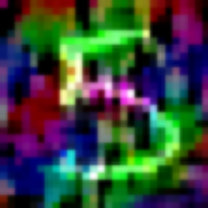

Verson 0

Above is the first attempt at implementing Mozart, I asked the generator to create what it thought the number 0 would look like in the style of Saba Mundlay. The MNIST database was loaded as a raw image:
These images then we’re put through a neural style transfer with the style image coming from the above artist. The images after this would look something like this (different images were used in this case):
After this the images are ready to be put through the AC-GAN. The AC-GAN is made up of two important parts: the generator and discriminator. The generator takes in a noise vector and a class (what you expect it to generate) and returns the generated image. The discriminator attempts to differentiate between the images. It is trying to see if the image is real or fake (real being a stylized image and fake being an image generated by the generator) and what class it believes the image belongs too (in the case of the MNIST database this is 0-9). An error then is calculated at how ‘wrong’ the discriminator was. This is the backpropagated back through the neural network in order to adjust the generator to build better images. For the image at the begging of this post to be created it had to go through about 1000 iterations.
As a version 0, this shows that it is possible to get the images to generate its own type of numbers. To initially try out the algorithm, only the test dataset from the MNIST database was used. Moving forward, I am going to try to convert the 60,000 training images and put it through the algorithm.